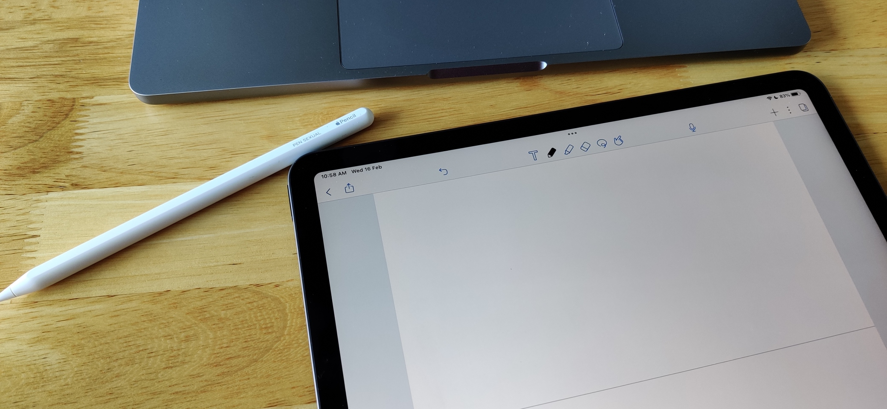

apple pencil double tap
The Apple pencil's double-tap to erase feature completely breaks my brain and habit from using pencils from years past.

The tap is far too sensitive and it keeps switching over to erase-mode as I readjust the pencil in my hand (a very normal thing to do).
I've been trying to get used to it for months, but no cigar.
I have now turned it off. It's simpler and more reliable to tap on the erase button on the app itself (for example, in Notability).
Why is there no 3-tap or a control for tap sensitivity?
Or better yet, an erase button!